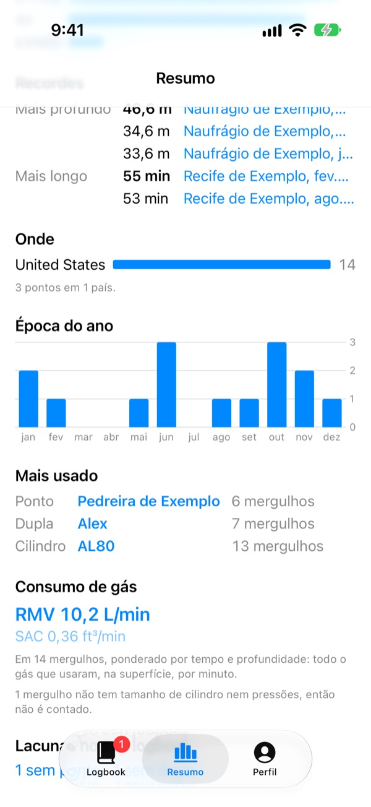

Primeiro, atualize todos os dispositivos
Muitos problemas desaparecem quando todos os dispositivos usam a build mais recente. Abra o TestFlight em cada iPhone, iPad e Mac que você usa e instale qualquer atualização. Uma build mais antiga para de enviar alterações até ser atualizada, e diz Atualize o Thermocline para continuar sincronizando. Suas alterações são mantidas e enviadas após a atualização.
Downloads de um computador de mergulho
O computador não é encontrado
- Desperte o computador e coloque-o no modo Bluetooth (Shearwater: Menu → Bluetooth). Ele só fica nesse modo por cerca de dois minutos.
- Segure-o perto do iPhone, iPad ou Mac.
- Os computadores Shearwater voltam para o último dispositivo que usaram. Se o seu celular ou outro Mac estiver por perto, desative o Bluetooth nesse dispositivo e tente de novo.
- Confira se o Bluetooth está ativado e se o Thermocline tem permissão para usá-lo (iPhone: Ajustes → Thermocline; Mac: Ajustes do Sistema → Privacidade e Segurança → Bluetooth).
É um Predator ou Petrel 1 e o iPhone não o encontra
Eles usam um Bluetooth mais antigo (Bluetooth Classic) que iPhones e iPads não conseguem usar. Baixe-os no Mac (veja o guia), ou importe os mergulhos deles do Shearwater Cloud ou de um arquivo UDDF.
Ele conecta, mas pede um PIN
Digite o código mostrado na tela do computador. Ele só é necessário na primeira vez.
"Nenhum mergulho novo"
Só são buscados os mergulhos mais novos que o seu último download. Se você apagou um mergulho e quer de volta, ative Baixar todos os mergulhos do computador e baixe de novo. Mergulhos que já estão no seu logbook são ignorados.
O download parou no meio
Escolha Manter para salvar os mergulhos que chegaram e depois baixe de novo para pegar o resto. Se continuar parando, escolha Tentar de novo perto do computador e envie o log de download.
Um download por cabo falha no Mac
- Confira se a porta corresponde ao cabo: a lista diz de que tipo é cada porta e avisa quando ela não é para o modelo que você escolheu.
- Desconecte e reconecte o cabo e depois use o botão de atualizar para procurar cabos de novo.
- Siga os passos de Antes de começar para o seu modelo.
- Os downloads por cabo são novos. Por favor, envie o log de download de qualquer forma.
Sincronização entre dispositivos
Meu app para iPhone diz que o Thermocline agora é um só app, ou vejo dois apps Thermocline
Em 18 de novembro de 2026, os apps para iPhone, iPad, Mac e Apple Watch viraram um só app, com um só link do beta. O app para iPhone que você tinha antes agora só ajuda você a mudar.
- Abra o app antigo. Se ele disser que a sincronização está desativada, toque em Ativar “Sincronizar com o iCloud” e deixe-o aberto por um minuto, ou toque em Exportar meu logbook como UDDF e salve o arquivo.
- Toque em Entrar no novo beta, ou abra o link do beta no seu iPhone, e instale o novo app. Ele fica ao lado do antigo.
- No novo app, ative Perfil → Sincronizar com o iCloud. Seus mergulhos, pontos, equipamento e ajustes voltam. Se você exportou, use Perfil → Importar um arquivo de logbook.
- Talvez você precise emparelhar seu computador de mergulho de novo e instalar o app para Watch de novo pelo app Watch no seu iPhone.
- Quando o novo app mostrar os mesmos mergulhos, apague o antigo.
No Mac, nada muda: continue atualizando o app para Mac como de costume.
Mergulhos sumiram ou aparecem em dobro depois de uma sincronização
- Não mude nada ainda. Tire uma captura de tela da seção Sincronização (iPhone: Perfil → Sincronização; Mac: Thermocline → Ajustes → Sincronização) em cada dispositivo e envie.
- Confira se todos os dispositivos estão na build mais recente.
- Perfil → Seus dados → Pontos de restauração pode levar seu logbook de volta a antes de uma importação, mesclagem ou exclusão. Restaurar salva primeiro seu logbook atual, então pode ser desfeito.
Uma alteração num dispositivo não aparece no outro
- Confira se Sincronizar com o iCloud está ativado nos dois, com sessão iniciada na mesma Conta Apple.
- Veja Aguardando envio no dispositivo onde você fez a alteração e abra o app nos dois com sinal. A seção Sincronização diz quando este dispositivo e os outros estão iguais.
- Toque em Sincronizar agora.
"Sem sessão no iCloud"
Inicie sessão no iCloud nos Ajustes do dispositivo. Até lá, seu logbook fica nesse dispositivo, seguro, e sincroniza assim que você iniciar sessão.
"Seu armazenamento do iCloud está cheio"
Seu logbook está seguro no dispositivo e sincroniza quando houver espaço. Libere espaço no iCloud, ou ative Economizar espaço do iCloud nas fotos de mergulho para que as fotos não sejam armazenadas duas vezes.
"Outro dispositivo usa uma versão mais nova"
Atualize o Thermocline neste dispositivo no TestFlight. Suas alterações estão seguras aqui e são enviadas após a atualização.
Importações
Alguns mergulhos ou detalhes não entraram
O relatório de importação lista tudo em Não importado e Confira, com o motivo. Cada logbook escreve UDDF de um jeito um pouco diferente, então valores faltando são normais e ficam em branco. Se faltar algo que você esperava, envie o relatório e, se puder, o arquivo.
Meu equipamento, fotos ou tipos de mergulho do MacDive estão faltando
A exportação UDDF do MacDive deixa isso de fora. Importe o XML dele por cima para equipamento, etiquetas e tipos de mergulho e, no Mac, importe a pasta do MacDive para as fotos. Mergulhos que já estão no seu logbook não são adicionados duas vezes. Veja Qual arquivo do MacDive usar.
NDL, ppO₂ ou CNS faltando em mergulhos do MacDive
A página do mergulho mostra o NDL como "—" e Deco como "Não registrado", ou o ppO₂ diz "Calculado a partir do gás e da profundidade". A exportação UDDF do MacDive não inclui NDL, ppO₂ nem CNS do computador. A pasta dele não tem perfil para mergulhos que o MacDive baixou num iPhone ou iPad, porque ele os armazena criptografados.
Importe também o XML do MacDive: ele preenche o que falta sem adicionar mergulhos de novo. Veja Qual arquivo do MacDive usar.
Mudar entre arquivos ou apps faz perder alguma coisa?
- Seus arquivos originais nunca são alterados. Guarde suas exportações do MacDive, e mantenha o próprio MacDive até ter comparado alguns mergulhos.
- Uma segunda importação adiciona, não substitui. Mergulhos que já estão no seu logbook são reconhecidos e só ganham o que falta, então você pode importar o XML depois do UDDF, ou a pasta depois de qualquer um dos dois.
- Você pode voltar atrás. Um ponto de restauração chamado Antes de uma importação é salvo antes de qualquer importação de mais de um mergulho (Perfil → Seus dados → Pontos de restauração no iPhone, Ajustes → Pontos de Restauração no Mac). No Mac, Desfazer Importação… no relatório também desfaz.
- Ao sair do Thermocline: a exportação UDDF dele é a completa. Ela inclui NDL, ppO₂ e CNS do computador ao longo de cada mergulho, equipamento, etiquetas, tipos de mergulho e links de vídeo. As fotos não ficam dentro de nenhum arquivo de exportação.
Mergulhos importados não têm gás
O arquivo não dizia qual gás foi usado. Esses mergulhos aguardam em A confirmar para você defini-lo.
Importei o arquivo errado
No Mac, use Desfazer Importação… no relatório de importação. Em qualquer dispositivo, um ponto de restauração chamado Antes de uma importação é salvo antes de qualquer importação de mais de um mergulho.
Um arquivo da Garmin não é importado
- "Isso é um arquivo zip": o Exportar original do Garmin Connect gera um .zip. Descompacte e depois escolha o arquivo .fit de dentro.
- "Este não é um arquivo FIT da Garmin": o arquivo não é de um relógio Garmin, ou só o nome dele termina em .fit. Use o arquivo da pasta GARMIN → Activity do relógio, ou o Exportar original.
- "arquivos Garmin não contêm mergulho": corridas, caminhadas, configurações e arquivos de saúde são ignorados. Só mergulhos entram.
- "parecem incompletos ou danificados": o arquivo parou no meio, muitas vezes por uma cópia ou um download que não terminou. O que pôde ser lido é mostrado; copie o arquivo de novo do relógio e reimporte para obter o resto. Mergulhos que já estão no seu logbook são ignorados.
- Escolher um arquivo da Garmin junto com outro arquivo de logbook não é possível de uma vez: importe o arquivo de logbook e depois os arquivos da Garmin.
Um mergulho da Garmin pede para eu conferir os cilindros
Com mais de um transmissor de cilindro, o arquivo da Garmin não diz em qual gás cada um estava, então eles foram associados aos cilindros do mergulho em ordem. Abra a seção de gás do mergulho e confira se cada pressão está no cilindro certo.
O horário de um mergulho da Garmin está uma hora errado
O horário vem do relógio interno do relógio Garmin. Se ele não estava na hora local de onde você mergulhou, o mergulho aparece no horário do relógio. Edite o horário do mergulho, ou ajuste o fuso horário do relógio antes da próxima viagem.
Um mergulho de deriva está com o ponto errado
Um mergulho é associado ao mais próximo entre o lugar onde você entrou e o lugar onde você subiu, o que numa deriva costuma ser onde você entrou. Se ele foi associado ao ponto errado ou a nenhum, escolha o ponto no mergulho e adicione às notas os outros naufrágios por onde você passou.
Consumo de gás e SAC
Um número de SAC parece errado
Toque ou clique em Como? ao lado dele. Ele mostra cada dado: o cilindro e o volume hidráulico, as pressões, a temperatura, a correção de gás real, o tempo e a profundidade. O culpado de costume é um tamanho de cilindro errado; corrija em Equipamento. Envie uma captura de tela da tela Como? se ainda parecer estranho.

Não há SAC, só uma mensagem
- Adicione o tamanho do cilindro para ver o SAC: escolha o modelo do cilindro ou insira o tamanho dele.
- Adicione as pressões inicial e final para ver o SAC: não há transmissor, então insira-as no cilindro.
- O SAC precisa de um perfil de profundidade: mergulhos registrados à mão sem perfil não têm SAC.
- Mergulhos com rebreather não recebem número de SAC.
O SAC só conta um cilindro
Num mergulho com vários gases, só o cilindro com o transmissor tem pressões. Insira as pressões inicial e final no outro cilindro e o SAC cobre todo o gás.
O Respiração do Resumo diz que nenhum mergulho tem tamanho de cilindro
Respiração só faz a média de mergulhos com tamanho de cilindro e pressões inicial e final. Mergulhos do UDDF do MacDive não têm tamanho de cilindro, porque os tamanhos dele não são volumes hidráulicos; importar o XML por cima os preenche (veja Qual arquivo do MacDive usar). Fora isso, defina o cilindro nos seus mergulhos (escolha o modelo, ou uma configuração de equipamento) e adicione as pressões onde você as tiver. Abaixo do número, Respiração diz quantos mergulhos não foram contados.

Fotos
Uma foto não aparece no meu outro dispositivo
Com Economizar espaço do iCloud nas fotos de mergulho ativado, uma foto mantém a cópia até que seu outro dispositivo a encontre nas Fotos do iCloud. Ative o ajuste nos dois dispositivos, confira se as Fotos do iCloud estão ativadas nos dois e dê tempo para o upload.
Os vídeos não foram adicionados
Vídeos da sua biblioteca só podem ser vinculados, não copiados. Ative Sincronização → Economizar espaço do iCloud nas fotos de mergulho e confira se o vídeo está nas Fotos do iCloud. Ou cole um link do YouTube ou do Vimeo abaixo das fotos do mergulho.
"O Thermocline não pode ler suas fotos"
O acesso ao Fotos foi recusado, então as fotos são copiadas em vez de vinculadas. Para vinculá-las, permita o acesso em Ajustes → Privacidade e Segurança → Fotos → Thermocline.
Pontos e o Apple Watch
O ponto sugerido está errado, ou não há sugestão
Escolha outro ponto, pesquise as listas integradas pelo nome, ou marque ou digite a posição você mesmo. Pedreiras e lagos no interior costumam faltar nas listas públicas, então a partir daí seus próprios pontos vêm primeiro nas sugestões.
O Thermocline não está no meu Apple Watch
O app para Watch vem com o app para iPhone do TestFlight. No seu iPhone, abra o app Watch, encontre o Thermocline em Apps Disponíveis e toque em Instalar. Ele precisa do watchOS 11 ou posterior. Se você veio do antigo app para iPhone, instale-o de novo: o antigo app para Watch pertence ao antigo app para iPhone.
O relógio diz "Aguardando uma boa posição" e Marcar local continua cinza
Um local só é salvo a partir de uma posição com precisão de ±30 m e com menos de 30 segundos, para que uma posição errada nunca chegue ao seu logbook. Fique na superfície com o relógio fora da água e com vista livre do céu, e espere um minuto. Ignorando uma posição antiga em cache quer dizer que ele está esperando uma posição nova. O GPS não funciona embaixo d'água: marque o local antes de descer ou quando subir à superfície.
"O acesso à localização está desativado para o Thermocline" no relógio
No relógio, abra Ajustes → Privacidade e Segurança → Serviços de Localização, ative os Serviços de Localização e permita o Thermocline durante o uso do app.
Um local marcado no Watch não apareceu no iPhone
No relógio, abra Locais marcados. Aguardando envio ao iPhone quer dizer que o iPhone ainda não o recebeu: mantenha o relógio perto do seu iPhone e abra o Thermocline no iPhone. Enviado ao iPhone quer dizer que ele já está lá: veja em Logbook → A confirmar. O iPhone pesquisa o local quando está online, então, sem sinal, ele aguarda com aguardando sinal para pesquisar.
O relógio não mostrou o nome de um ponto depois que marquei um local
O nome vem do seu iPhone: quando ele está por perto e o Thermocline pode responder, o relógio mostra abaixo do local o ponto que ele sugeriria, seu ou das listas de pontos de mergulho, com a distância. Com o iPhone fora de alcance, o relógio nomeia seus próprios pontos a partir da cópia que o iPhone deixou nele, mas não os das listas de pontos de mergulho. Sem nenhum ponto a cerca de 1,5 km, o local é marcado sem nome. De qualquer forma, você escolhe o ponto no iPhone, em Logbook → A confirmar.
O nome que eu falei no relógio não foi salvo
O nome é salvo quando o ditado ou o teclado fecha, ou quando você volta. Abra Locais marcados, toque no local e confira o nome; toque em Alterar o nome para tentar de novo. Se o local já foi enviado, o nome o acompanha até o iPhone.
O relógio registra meus mergulhos?
Não. O app Thermocline para Watch só marca locais na superfície. Seus mergulhos vêm do seu computador de mergulho. Para relógios Garmin Descent, importe os arquivos .fit deles: veja Garmin Descent no guia.
Um local sumiu do relógio
Isso é esperado. Um local sai do relógio assim que é confirmado ou descartado no iPhone. Um local confirmado é um ponto no seu logbook e sincroniza com seus outros dispositivos.
Enviar um relatório ou um log de download
- Pelo app: tire uma captura de tela e use Compartilhar Feedback Sobre a Versão Beta no TestFlight. Ele chega com a build e o dispositivo anexados.
- Log de download, iPhone: na tela de download, toque em Log de download e compartilhe. Ele lista só mensagens do Bluetooth e do computador, sem dados de mergulho.
- Log de download, Mac: na janela de download, escolha Log de Download…, depois Salvar Log…, e anexe o arquivo.
- E-mail: brian@616labs.net, com seu dispositivo, o número da build (mostrado no TestFlight) e o que você esperava que acontecesse.